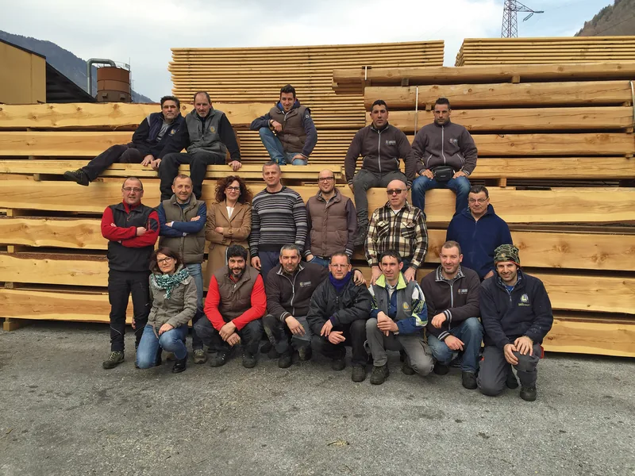
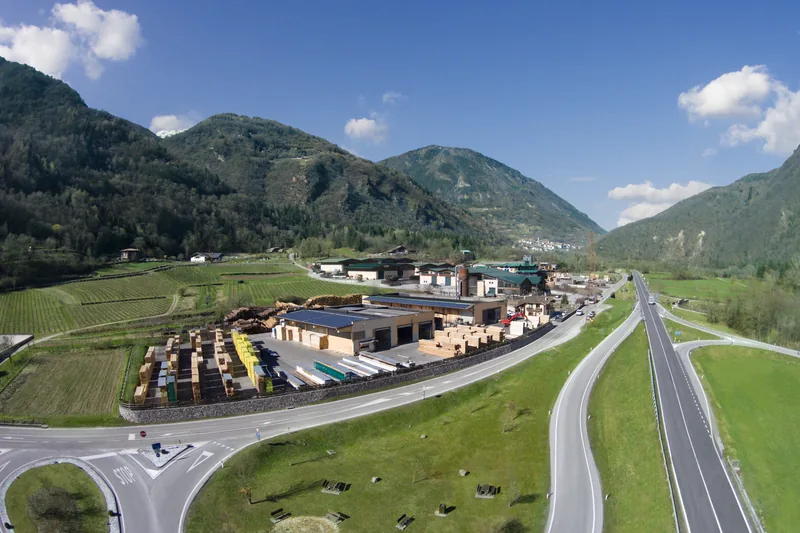
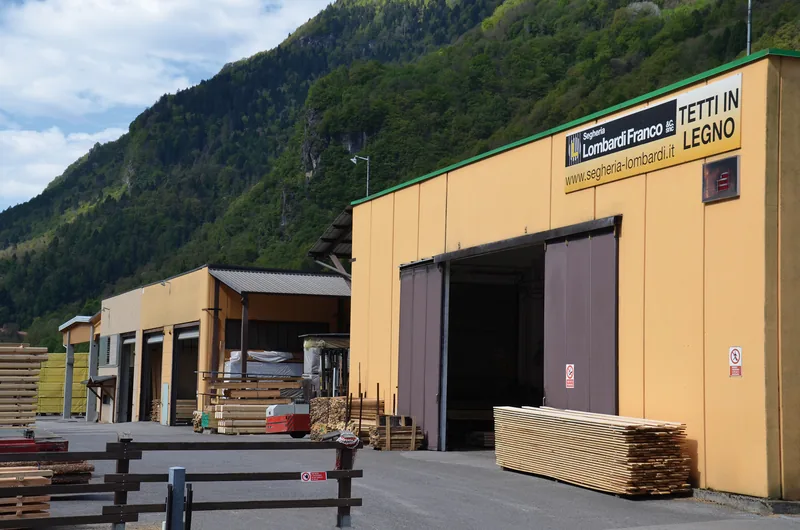

La segheria dei Lombardi
Rilevata nel 1972 da Franco Lombardi, oggi con i figli Serafino, Mirco e Mirella. Dai segati e dal commercio di legname ai tetti in legno, sempre a Giulis, in Valle del Chiese.

Una lunga tradizione
Nel 1972 Franco Lombardi rileva la segheria insieme con altri due soci, e si comincia producendo segati e commerciando legname.
Con gli anni, rimasto unico socio, Franco la fa crescere e specializzare: rinnova le tecniche, le macchine, il sapere e la squadra, per restare competitivo con una qualità alta.
Oggi al suo fianco ci sono i figli Serafino, Mirco e Mirella, e una struttura organizzata di persone qualificate.

Alcune tappe
- 1972
- La segheria diventa dei LombardiFranco Lombardi la rileva con due soci. Si fanno segati e commercio di legname.
- 2011
- Qualificati per le struttureIl Consiglio superiore dei lavori pubblici rilascia la qualificazione per la lavorazione di elementi strutturali in legno massiccio e lamellare.
- 2023
- Energia dal soleEfficientamento energetico del capannone e potenziamento dell'impianto fotovoltaico con un nuovo generatore, cofinanziato dal programma FESR 2021-2027. Il progetto va da agosto 2023 a giugno 2024. Il progetto
Tutta la filiera, qui
Curiamo l'intera filiera del prodotto legno: dall'approvvigionamento del legname alla gestione dei sottoprodotti. Il legno per il massello viene in gran parte da foreste del Trentino certificate PEFC.
Niente si butta: la segatura diventa pellet, gli scarti vanno alle centrali di riscaldamento a biomassa della regione. E il legno lo trattiamo con sostanze certificate non dannose per la salute.


Raccontateci il lavoro
Bastano due righe: che lavoro è, in che comune e più o meno che misure. Se avete un progetto o delle foto, meglio ancora. Poi vi richiamiamo noi.
Telefono 0465 621159 · info@segheria-lombardi.it